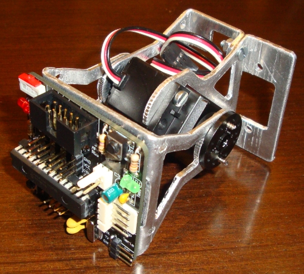
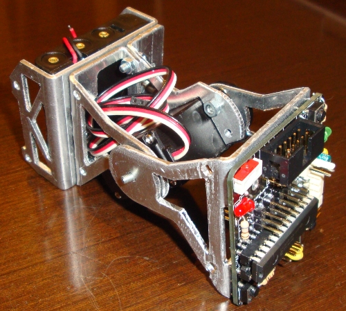
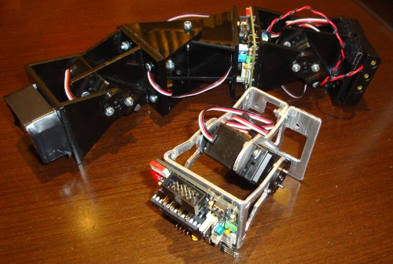

Realizado el segundo prototipo de los módulos MY-1, diseñados por Andrés Prieto-Moreno. Es la primera prueba del modelo mecanizado. Las piezas están hechas en una máquina CNC y luego se ha plegado. Se ha empleado aluminio de 2mm de grosor.

En esta foto se puede ver el módulo al que se le han atornillado la tarjeta Skycube 1.0 en la cabeza y el portapilas en la parte trasera.

En esta foto el módulo MY-1 está junto al robot Minicube-II hecho con tres módulos Y1.
Este segundo prototipo ha servido para encontrar errores en el mecanizado y probar la pieza del portapilas. Todavía queda por sacar un tercer prototipo y luego la tirada definitiva. Los módulos finales estarán pintados para mejorar el acabado y que no se vean las ralladuras que aparecen durante la fabricación de las piezas.